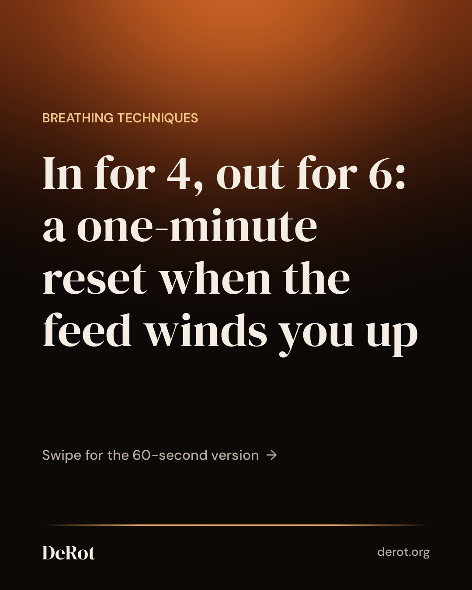
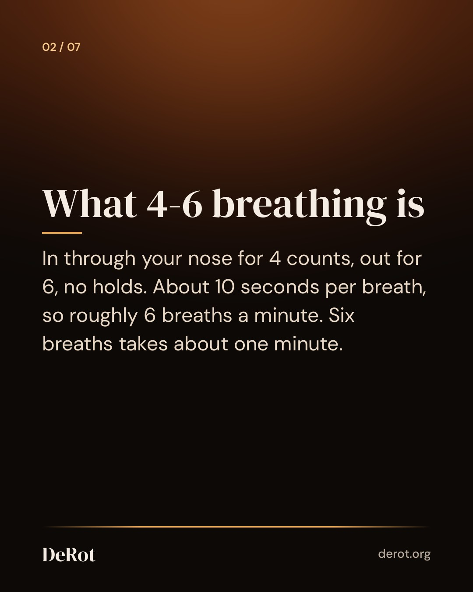
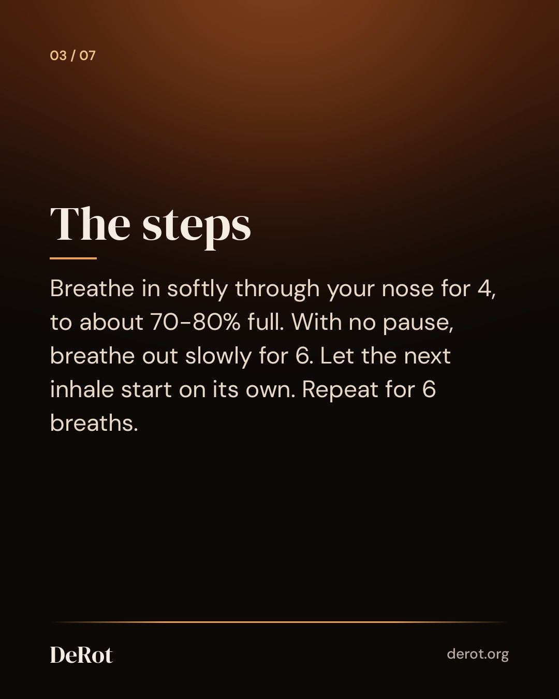
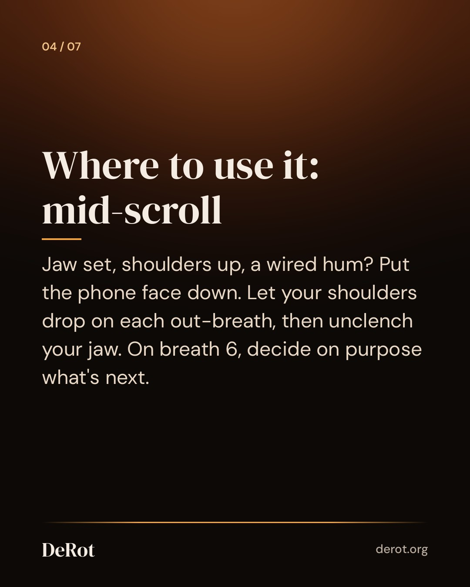
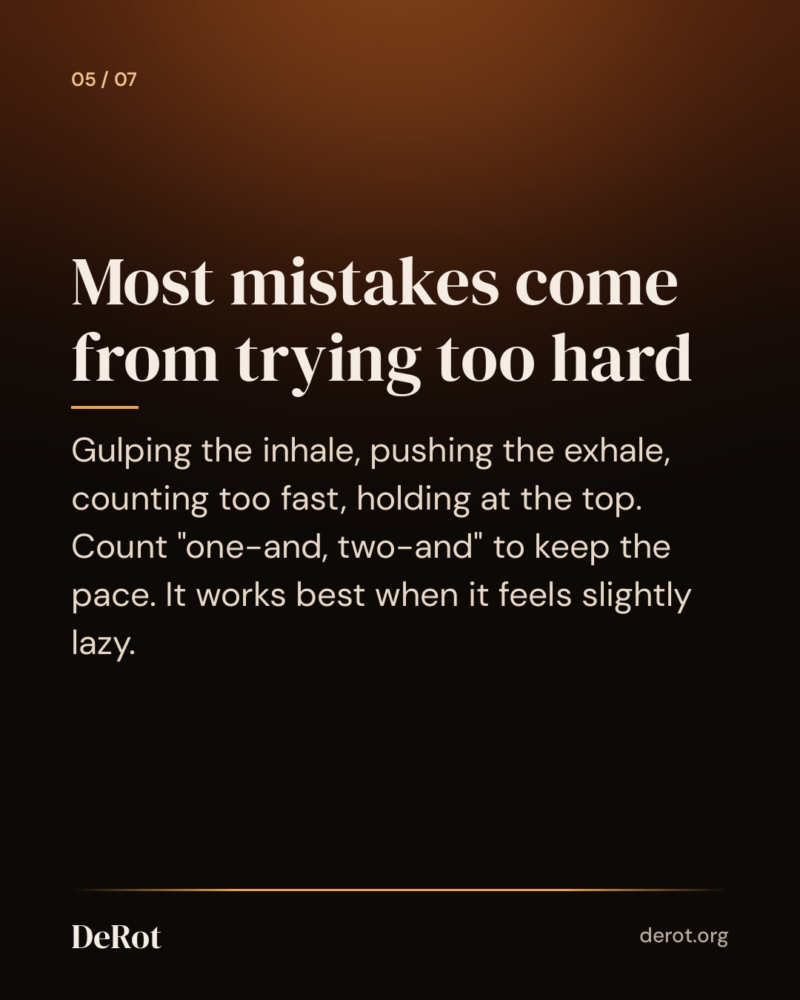
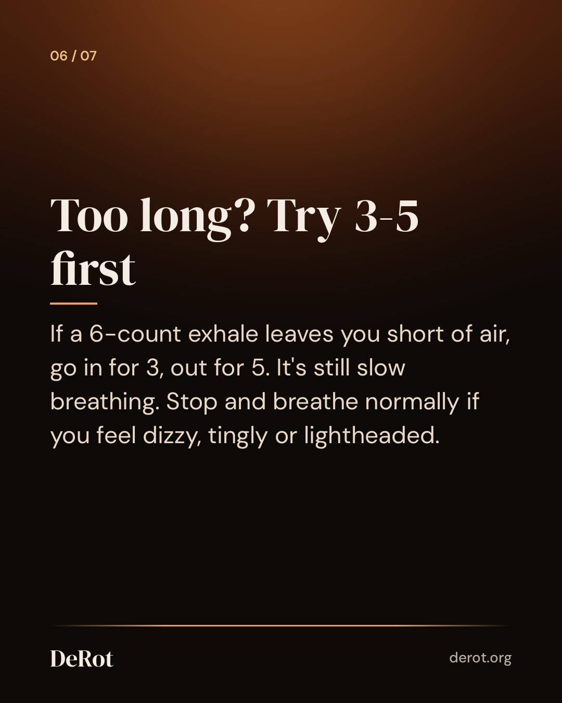

4-6 Breathing: How to Do the Calm Pattern in 60 Seconds
Carousel (Instagram)







Instagram caption
Nothing to hold, two numbers to count, one minute. For most people, it's the gentlest pattern to reach for mid-scroll. 4-6 breathing has no breath holds, which makes it a good fit if box breathing or 4-7-8 leave you feeling a little panicky when the air is "stopped." Here's what the research actually says: the slow pace seems to do most of the work. A longer exhale may add to how relaxed you feel, but studies haven't found a clear extra benefit over equal in and out breaths. So slow down first, and keep the longer exhale because it feels good, not because it's magic. Done comfortably, it usually feels like a gradual settling. Your breath gets quieter, your shoulders come down, and the buzzy edge eases. Some days you'll notice a lot, some days very little. Both are normal. The goal is how you feel, not your screen time. If you go back to scrolling a notch calmer, that counts. A quick safety note: sit while you're learning, and stop if you feel lightheaded, tingly or short of air. Breathing can help you feel calmer, but it isn't a fix for ongoing anxiety, panic or sleep problems. If those keep coming back, talk to a professional. Prefer not to count in your head? Our free 60-second calm breathing timer paces each breath for you. Full guide: link in bio. #breathwork #nervoussystemregulation #slowbreathing #breathingexercise #calmbreathing
Threads
Useful thing I learned about 4-6 breathing (in for 4, out for 6, no holds): the slow pace seems to do most of the work. The longer exhale may feel more relaxing, but studies haven't shown a clear extra benefit over equal breaths. So if 6 counts feels like a strain, go 3-5. Comfort beats exact numbers. https://derot.org/blog/4-6-breathing-how-to/
You know the moment: you surface from the feed with your jaw set and your shoulders up around your ears. 4-6 breathing is a gentle way to come back down in about a minute. Breathe in softly through your nose for 4 counts, then out slowly for 6, with no pause at the top. Repeat for 6 breaths. On each out-breath, let your shoulders drop and your jaw unclench. Keep it easy. Fill to about 70-80% rather than gulping, and if 6 counts feels too long, try in for 3, out for 5. Stop and breathe normally if you feel dizzy or lightheaded. Our full guide covers common mistakes, how it compares to box and 4-7-8 breathing, and what the research does and doesn't show.
Schedule (UTC)
| queued | 2026-10-12T22:53:00+00:00 | ||
| threads | queued | 2026-10-12T22:53:00+00:00 | |
| queued | 2026-10-12T23:30:00+00:00 |